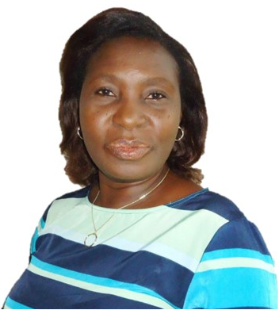
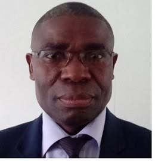

Home / BOARD MEMBERS
Ike Nwachukwu is a Professor of Agricultural Extension and Rural Sociology at the Michael Okpara University of Agriculture, Umudike, Nigeria. He holds a B.Sc. degree in Mass Communication and Sociology from the University of Lagos, an M.Sc. in Agricultural Communication from the Obafemi Awolowo University, Ile Ife. Ike bagged his Ph.D. degree in Agricultural Extension and Rural Sociology from the same O A U, Ile Ife, Nigeria.
After working at the National Cereals Research Institute, Badeggi as a Research Officer in Agricultural Extension, he moved over to the University in 2001. As a Lecturer, his major area of specialization is agricultural communication. Other areas of interest include, social impact assessment, gender studies and rural development.
Ike has been involved in teaching, research and community service for more than two decades now. He has successfully supervised and graduated twenty-two Ph.D students and many Master’s degree students. He has published in local and international Journals, more than eighty research papers and has authored and co-authored nine books in his field. Ike has consulted for nine local and foreign organizations.
Prof. Nwachukwu is well travelled and has participated in many international research fellowships. In 2004, he was a Research Fellow at the University of Glasgow, United Kingdom. In 2012, he was a Senior Research Adviser at Shell Petroleum Development Company, Port Harcourt, Nigeria. His major work in Shell was on the Social Impact Assessment of Shell’s divested projects in Warri. He is a Member of the Federal Government’s Agricultural Extension Transformation Agenda, which developed the policy document for the transformation of the extension systems in Nigeria. Ike belongs to many professional associations to which he is on the Executive Board of some of them. He is the President of the Society for Community and Communication Development Research
Jemimah Timothy Ekanem is a Senior Lecturer in the Department of Agricultural Economics and Extension of Akwa Ibom State University. She obtained her Professional Training at the University of Uyo, Uyo where she graduated as the best final year student in the Department with, a Bachelor of Agriculture Degree in Agricultural Economics and Extension. In 2008, she obtained her Master’s degree in Agricultural Extension in the same University and proceeded to the Michael Okpara University of Agriculture, Umudike, Abia State for a Doctor of Philosophy Degree in the Department of Rural Sociology and Extension and obtained same in 2013. She has been involved in Teaching and Research in Agricultural communication, Extension Education, Rural Sociology, Extension Administration, Community Development, technology development, dissemination and transfer and others since 2004. Dr. (mrs) Ekanem has published widely in International and National Scholarly journals. She has co-authored a book and written book chapters. She has attended National and International conferences. She won the first best paper and third best paper awards at Corporate Social Responsibility and Sustainable Development conferences held at Dubai, UAE and Addis Ababa, Ethiopia in 2015 and 2017 respectively. In 2009, she was a research intern at Shell Petroleum Development Company (SPDC). Dr. (Mrs) Ekanem is happily married with Children.

Prof. Olayinka I. Nwachukwu has Bachelor of Agriculture and MSc from Obafemi Awolowo University, Nigeria, and Ph.D in Soil Science from the University of Glasgow, U. K., on the prestigious Commonwealth Academic Staff Scholarship. A holder of multiple academic awards and fellowships, she has won notable national and international research grants. She is an accomplished author with several publications in local and international journals, has authored books and book chapters on soil, environmental degradation and remediation. Prof Nwachukwu is widely travelled, presenting research papers at academic conferences in several countries. Her research interests are soil and groundwater contamination, the impact of industrial contamination on the life quality of residents in affected communities, and she has achieved notable results in the use of organic materials and local plants as viable and potentially sustainable methods of cleaning up contaminated soil. She is the Vice President of Organization for Total Women Development (OTWOD), a State registered Community Based Organization in Abia State, Nigeria. Through her publications and community service activities, she is creating awareness on the dangers of citing industries in residential areas, and advocates the effective implementation of existing laws on waste management and disposal. A member of Soil Science Society of Nigeria and British Society of Soil Science, Dr Nwachukwu is currently an Associate Professor of Soil Science at Michael Okpara University of Agriculture, Nigeria.

Dr. Irozuru is an Information Technology and Business Strategy consultant with over 25 years of experience, who has worked across Europe, Asia and Africa. He has worked across many private and public sectors including; healthcare, travel, local and central governments, security, insurance, motor, utility and energy – oil and gas.
Eric’s primary interest is in value engineering, that is, helping organisations to create and realize value from their investments in technology and people. This he does by helping organisations devise strategies and design innovative management frameworks for improving the performance of the programmes and projects used to implement their business strategy and organisational change, in order to achieve value from these investments.
Eric is the founder and chief executive of information technology services company, ECR Technology Services, with particular focus on strategy implementation - the synergy from the alignment of IT strategy and business strategy; innovation management and ECR’s unique training technique for entrepreneurship.
Eric began his professional career as a Software Engineer in Lagos, Nigeria after serving his nation in the National Youth Service Corps (NYSC) in 1984, following his graduation in 1983, from the University of Port Harcourt, where he read Mathematics and Computer Science, being a pioneer graduate in Computer Science from that University. The stay in Lagos was brief as in 1985, he moved to the United Kingdom for his graduate studies, where he has remained ever since. While in the UK, he completed his doctoral programme in information strategies and management frameworks. And later, added a Masters in Business Administration from the renowned Manchester Business School, in order to provide the breath, width and vision to his business horizon that he felt a PhD programme didn’t give him.
Following his Master’s programme, Eric resumed his career as a Software Engineer in the UK, working for the National Health Service (NHS). A spell that lasted about 12 years, before he became an independent consultant, consulting to companies across Europe and Asia. In recent years, Eric began looking homewards by consulting to companies in Africa, in particular Nigeria his fatherland.
Besides his role at ECR, Eric is also a co-founder and director of Kabod Place Enterprise Limited, an Information Technology company with focus on online services and general IT management, with offices in the UK and Nigeria.
In addition, Eric is a coach, counsellor and speaker. At his spare time Eric helps at his local church and doubles as a lay Bible teacher. Eric maintains contact with his roots in Africa through active membership of his community's believers association - Amakama Believers Association (ABA) of which he is also a patron. He holds the following academic qualifications:
PhD (Information Systems – Strategies and Frameworks), University of Salford, UK
MBA (Strategy & Change Management), Manchester Business School, Manchester, UK
MSc (Computer Science), University of Salford, Salford, UK
BSc (Hons) Mathematics and Computer Science, University of Port Harcourt, Nigeria